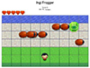

-
Jayingeeks
Jayingeeks is a shopping mall which sells clothes, sticker and 3D printed objects for tech enthusiasts.
-
 Ingi Resume
Ingi Resume
This web page is my resume page, and it was the second project for Udacity's Front-End Nanodegree. The project was focused on using JSON like objects to manage content more efficiently.
-

Ingi Frogger
This web page is the third project for Udacity's Front-End Nanodegree. The project was focused on using JavaScript and HTML5 Canvas to make a classic arcade game on web page.
-
Ingi Portfolio
This web page is my portfolio page, and it was the first project for Udacity's Front-End Nanodegree. The project was built on Bootstrap, and the project was focused on using grid styling system to style the web page more easily.